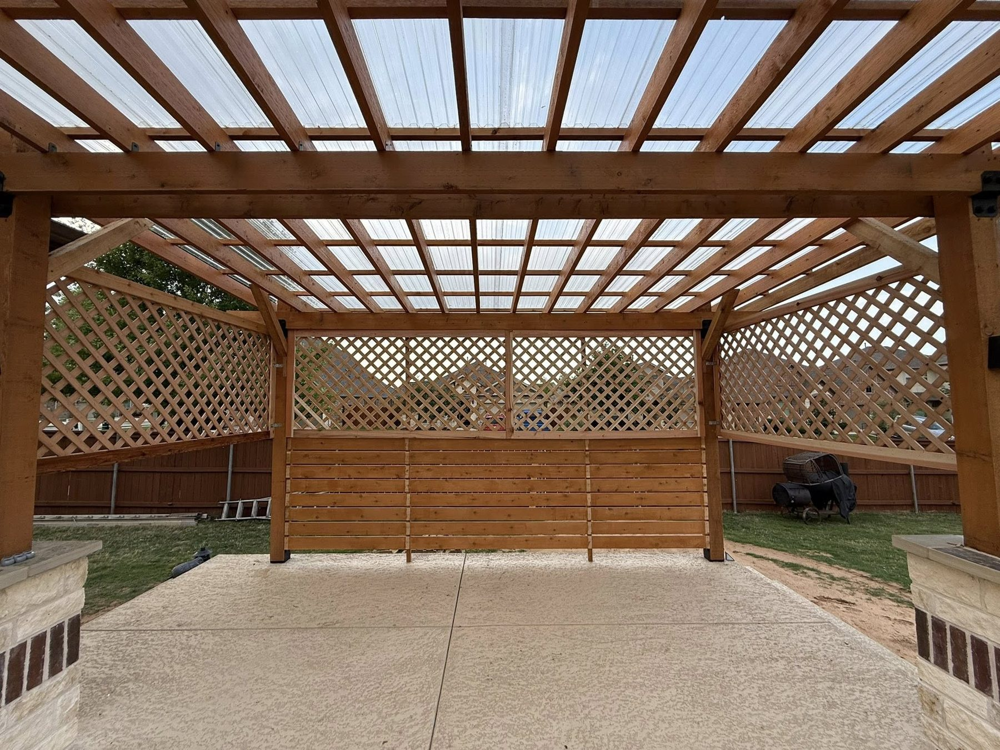
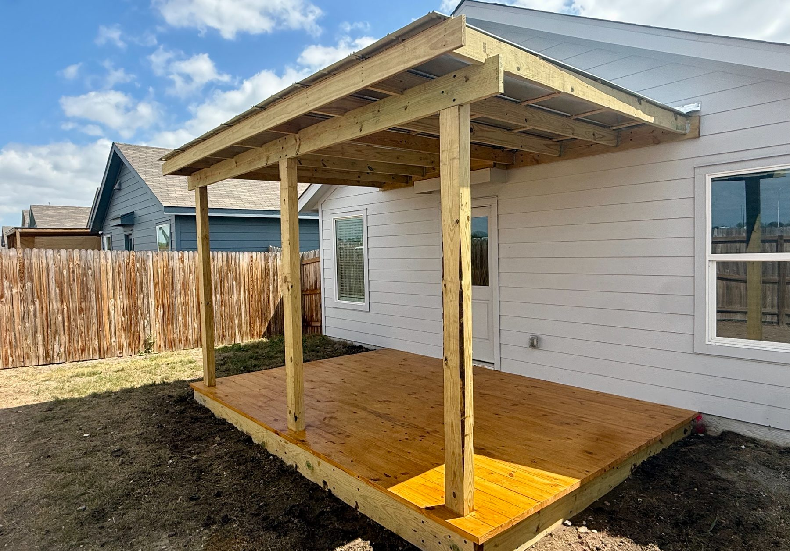
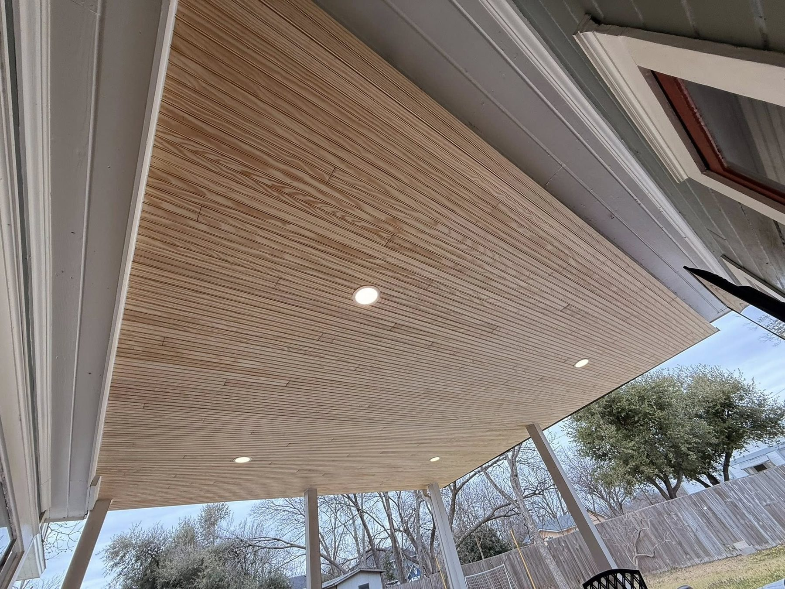
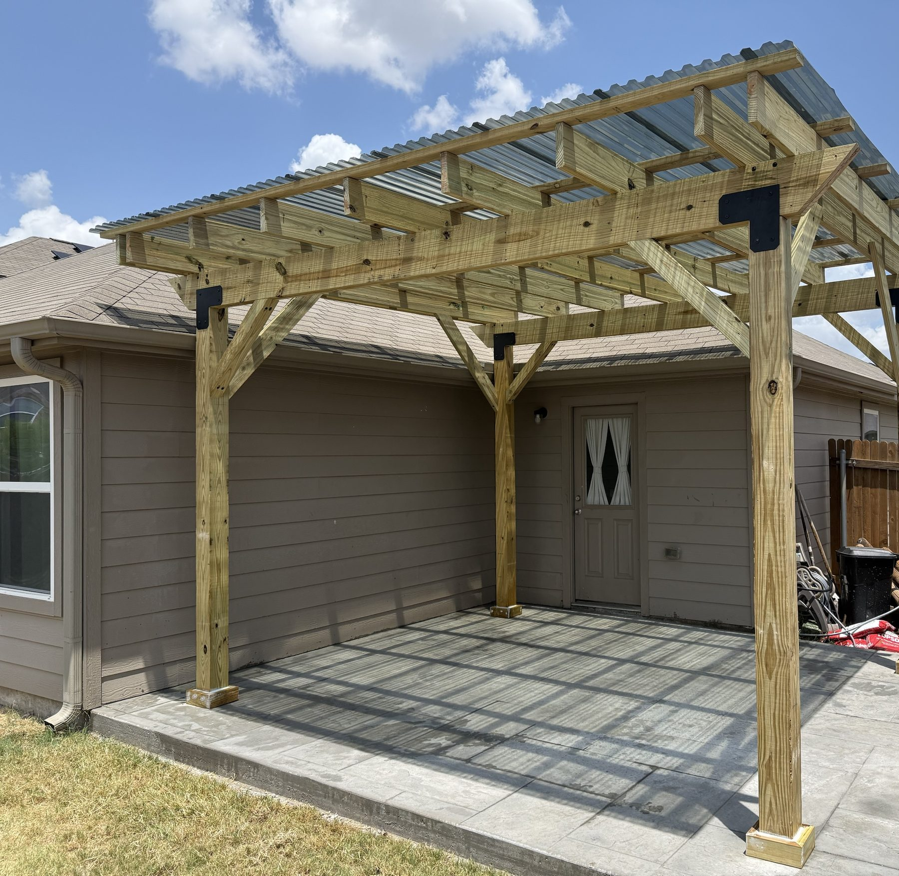

An open pergola gives you filtered shade, but it does nothing when it rains and not much at 4 p.m. in August. So a common question we hear is whether a roof can go on a pergola you already have.
Sometimes that is a straightforward upgrade. Sometimes the pergola was never built to carry a roof, and the honest answer is a new structure. Here is how to tell which one you have, the roof options that work in Austin, what a roofed cover costs compared with an open pergola, and the details that decide whether it stays dry and cool.
Can your pergola hold a roof?
Many pergolas cannot carry a solid roof without changes, because an open pergola is built for shade, not for roof weight and wind. A roof adds the weight of panels or shingles, and it turns the whole structure into something wind can push and lift. Posts, beams, footings and connections all have to be sized for that.
When we look at an existing pergola, we check four things:
- Posts and footings. How big the posts are, how deep they go and whether they sit in concrete footings or on surface brackets.
- Beams and spans. Whether the beams can carry a roof across the current span without sagging.
- Rafter spacing. Open pergolas often have rafters spaced for looks. A roof usually needs a tighter, regular layout to fasten to.
- Condition. Rot at the base of the posts, loose hardware or twisted beams mean the frame should be fixed or replaced before anything goes on top.
If the frame passes, we add rafters, purlins and connectors and put the roof on. If it does not, rebuilding the pergola as a proper patio cover often costs less than reinforcing every part of an old one.

Your roof options
The right roof depends on whether you want light, full shade or a cover that matches the house. These are the options that work best around Austin.
Clear or tinted polycarbonate panels
Polycarbonate panels block rain and let light through, so the space under them stays bright. They are usually the lightest roof to add, which can make them a good fit for a pergola that is close to strong enough. Clear panels let a lot of heat through in summer, so in Austin we lean toward tinted or opal panels. Hail can mark or crack them, and they show dirt and leaves from below.
Corrugated or standing-seam metal
Metal is a popular roof for patio covers around Austin. It sheds rain fast, holds up well to hail, and lasts a long time. Underneath, bare metal can feel warm on a summer afternoon and can be loud in a downpour, which is why many people add a ceiling below it. A light roof color helps with heat.
Shingles to match the house
On an attached cover, shingles can match the main roof so the cover looks like it was always part of the house. Shingles need more slope and a solid deck under them, so this is usually a full patio cover build rather than a quick add-on. HOAs tend to like it, because it matches what is already there.
Louvered roofs
Louvered systems use adjustable blades you can open for light or close for rain. They are the most expensive way to roof a pergola. For most Austin backyards, a solid roof over part of the space and an open pergola over the rest gets you most of the benefit for less.
Shade sails and fabric
Fabric shades are the cheapest way to cut sun, and they can come down in winter. They do not keep you dry in a real storm, and Texas sun and wind wear them out. Think of them as shade, not a roof.

What a roofed cover costs compared with an open pergola
A solid roof is the biggest single jump in pergola cost. Here is what we charge for new builds in the Austin area in 2026, so you can see the gap:
| Structure | 12x12 to 12x16 | 14x20 and up |
|---|---|---|
| Freestanding open-top cedar pergola | $8,500 to $13,000 | $13,500 to $22,000 |
| Attached open-top cedar pergola | $10,500 to $16,000 | $16,500 to $26,000 |
| Solid-roof cover, shingle | $14,500 to $22,000 | $22,500 to $38,000 |
| Solid-roof cover, metal | $17,500 to $26,000 | $26,500 to $44,000 |
Add-ons on a 12x12 to 12x16 cover: a tongue-and-groove ceiling adds $2,700 to $5,600, and fans and lights add $900 to $2,400.
Adding a roof to a pergola you already have can cost less than building new, because the posts and beams may already be there. How much less depends entirely on what the frame needs. That is why we look at the pergola in person before we price a roof on it, and why we will tell you if a new cover is the better buy. Our Austin pergola cost guide explains what drives the price of each structure.
Already have a pergola? Send a few photos of it, including the posts where they meet the ground. John will tell you whether it can take a roof, and price it both ways if it is close.
Ask about my pergolaKeeping it cool under a roof
A solid roof blocks direct sun, but it can trap heat under it if nothing else is done. In Austin, these make the biggest difference:
- A ceiling. A tongue-and-groove ceiling under a metal roof cuts the heat coming down from the panels and makes the cover look finished.
- A ceiling fan. Moving air is what makes a covered patio comfortable in July. Plan the wiring before the ceiling goes in.
- Height. A taller cover lets hot air rise away from where you sit. Low, flat covers feel hotter.
- Roof color. A light metal or a tinted polycarbonate panel stays cooler than a dark one.

Where the water goes
A roof turns rain that used to fall across the yard into one stream off one edge, so plan where it goes before the roof goes on. On a 12x16 cover, that is a lot of water in a Central Texas storm. A gutter and downspout that carry it away from the house and the patio keep it from pooling at the foundation or washing out a flower bed.
Slope matters too. A roof needs enough pitch for its material to shed water, and on an attached cover, the connection to the house needs proper flashing so water does not run behind the siding. This is where quick roof add-ons most often go wrong.
Attached or freestanding
An attached cover ties into the house on one side, which saves a row of posts and keeps the walk from the back door dry. It needs a solid connection to the house framing and careful flashing where it meets the wall or roof. A freestanding pergola with a new roof stands on its own posts, so there is no tie-in to the house, but you get a gap between the house and the cover.
If your existing pergola is freestanding and you want to stay dry from the back door, it may make sense to replace it with an attached cover rather than roof it where it stands.
Permits and HOA review
Adding a roof can change the permit picture. A roofed structure is treated differently from an open pergola in many places, and an attached cover is more likely to need a permit than a freestanding one. Rules vary by city and county, so we check which ones apply to your address and pull the permit ourselves when one is needed.
Most Austin-area HOAs also review covers before work starts, usually including the roof material and color. We put together the drawings and product details for the submission. Our HOA approval guide explains how long that usually takes.

Should you roof your pergola or build a new cover?
Roof the pergola you have when the frame is sound, the posts sit in good footings, and the size and location already work for you. Build a new cover when the frame needs major reinforcement, the posts are on surface brackets or showing rot, or you want it attached to the house and it is not.
We will tell you plainly which one makes sense. Sometimes the cheaper answer is a shade sail over the pergola you already have, and that is fine too.
John walks every estimate himself and writes a line-itemed quote. We build pergolas and patio covers across greater Austin, including Cedar Park, Round Rock and Buda. See our Austin patio cover page and our Austin pergola page for recent builds.
Pergola roof questions, answered
Can you put a roof on an existing pergola?
Often, yes, if the frame is strong enough. A roof adds weight and wind load, so we check the posts, footings, beams and rafter spacing first. If the frame is sound, we add rafters and the roof. If not, a new cover is usually the better buy.
How much does it cost to add a roof to a pergola?
It depends on what the frame needs. For comparison, a new 12x12 to 12x16 open cedar pergola runs $8,500 to $13,000, while a solid-roof cover of that size runs $14,500 to $22,000 with shingles and $17,500 to $26,000 with metal. Roofing a sound existing pergola can cost less than building new.
What is the best roof for a pergola in Texas?
For most Austin homes, metal. It sheds rain fast, holds up well to hail and lasts a long time. Polycarbonate is a good choice if you want light underneath, and shingles make sense on an attached cover that should match the house.
Is a polycarbonate pergola roof too hot in Austin?
Clear panels let a lot of heat through in summer. Tinted or opal panels cut the glare and heat while still letting light in, and a ceiling fan underneath helps more than anything else.
How do I keep a covered pergola cool?
Add a ceiling under a metal roof, install a ceiling fan, build the cover tall enough for hot air to rise, and choose a light roof color. Together, those make the biggest difference in an Austin summer.
Do I need a permit to add a roof to a pergola in Austin?
You may. A roofed structure is treated differently from an open pergola in many places, and attached covers are more likely to need one. We check which rules apply to your address and pull the permit ourselves when one is needed.
Do I need gutters on a pergola roof?
Usually, yes. A roof sends all the rain off one edge, so a gutter and downspout that carry it away from the house and patio keep water from pooling at the foundation.
Should I roof my pergola or build a new patio cover?
Roof it if the frame is sound and the posts sit in good footings. Build a new cover if the frame needs major reinforcement, the posts are rotting or on surface brackets, or you want it attached to the house and it is not.
Prices on this page come from our own 2026 Austin-area quotes. Rules change, so we check which ones apply to your address before every build. New to a term? See our plain-English glossary.